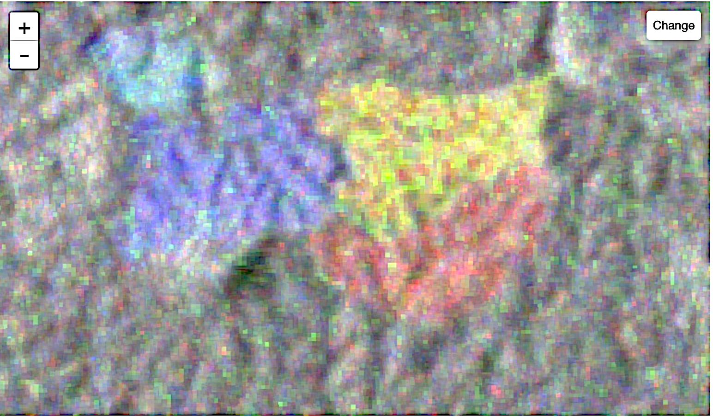
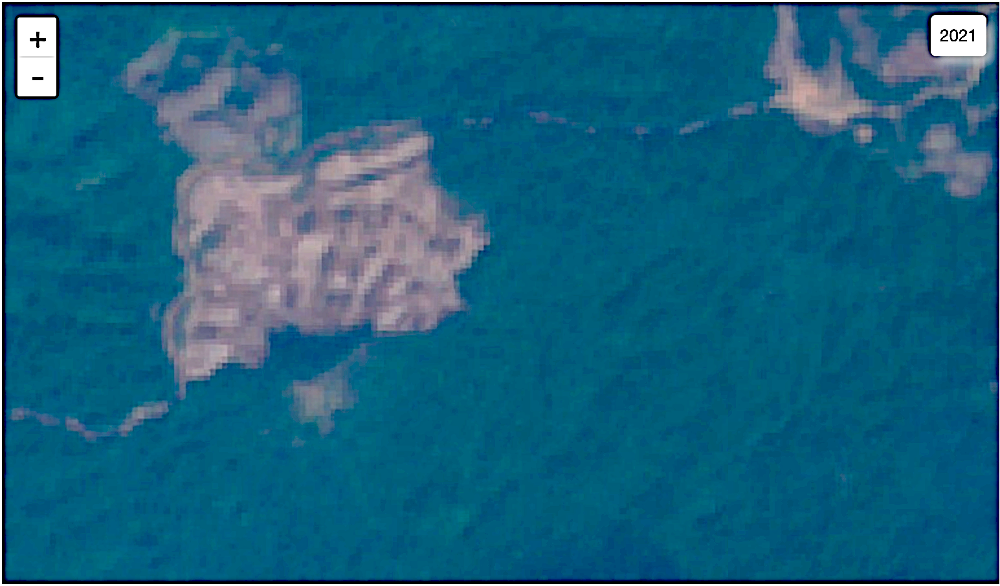
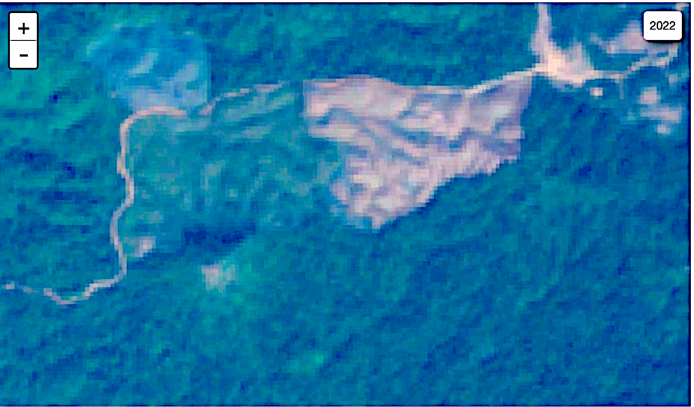
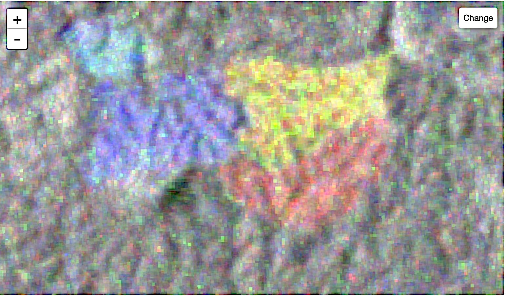
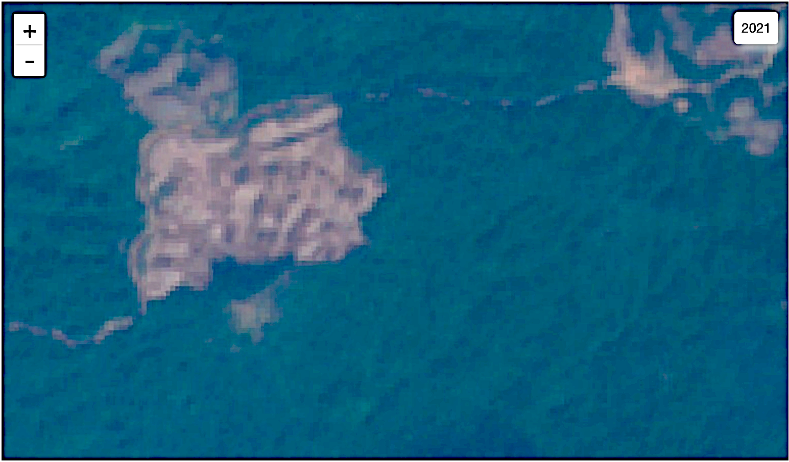
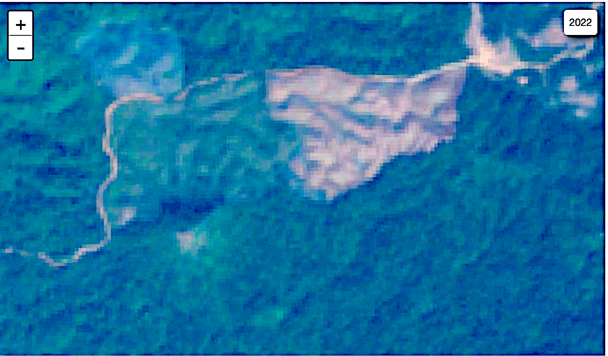

8.3 RADAR
RADAR, an acronym for RAdio Detection And Ranging, is a sophisticated active remote sensing technology that employs radio waves to detect and analyze objects. It entails emitting radio waves towards a target. Upon encountering the target, a portion of the signal is reflected back to the RADAR system, which subsequently detects and processes this return signal. The elapsed time between the emission and reception of the signal, coupled with any variations in the signals properties, furnishes comprehensive information regarding the targets distance, size, shape, and other pertinent characteristics.
In Section 8.1.4, we explored the concept of the atmospheric window, which refers to the range of wavelengths that can pass through the Earths atmosphere with minimal absorption and scattering. RADAR technology significantly benefits from this concept. Unlike optical sensors that rely on visible light and can be severely impacted by atmospheric conditions such as clouds, rain, or fog, RADAR systems operate effectively unhindered across a broad range of microwave and radio frequencies. These frequencies experience minimal attenuation as they travel through the atmosphere, making RADAR particularly advantageous for continuous monitoring under adverse weather conditions. This capability is especially crucial for applications where persistent cloud cover is common, such as in certain rainforests and maritime / polar regions.
Furthermore, while passive optical remote sensing systems dependent on sunlight are rendered ineffective during the nighttime, RADAR systems can function continuously. This capability enables the acquisition of continuous data irrespective of the time of day, providing a significant advantage for monitoring and managing natural resources, environmental changes, and other phenomena that require regular observations.
8.3.1 SAR
Synthetic Aperture Radar (SAR) is an advanced form of RADAR technology that significantly enhances spatial resolution. As discussed in Section 8.2.5, high spatial resolution is crucial for capturing fine details in remote sensing imagery. SAR achieves this through a technique called synthetic aperture, which circumvents the limitations of the physical antenna size that can be deployed on satellites or aircraft.
In traditional RADAR systems, spatial resolution is directly proportional to the antennas size: larger antennas yield finer resolution. However, practical constraints dictate the size of antennas that can be launched and maintained on satellites, spacecraft, and aircraft. To address this, SAR employs a method where a small antenna is utilized to collect data over the Earth. Each pass generates a segment of data for a specific ground area. By combining these segments computationally, SAR simulates the effect of a much larger antenna, effectively increasing the spatial resolution of the resulting imagery. This approach enables SAR to produce high-resolution images that reveal intricate features of the Earths surface.
SAR operates across various frequency bands, each with distinct characteristics and applications. These bands are categorized based on their wavelength, and their detailed descriptions are provided in Table 8.3, courtesy of NASA Earth Data37. The selection of band influences the penetration depth, resolution, and the types of surfaces or materials that can be effectively analyzed. For instance, different bands may be more suitable for detecting vegetation, soil moisture, or urban infrastructure, and thus a combination of bands may enhance the versatility of SAR in environmental and scientific applications.
| Band | Frequency | Wavelength | Typical Application |
|---|---|---|---|
| Ka | 27-40 GHz | 1.1-0.8 cm | Airport surveillance |
| K | 18-27 GHz | 1.7-1.1 cm | Short-range applications |
| Ku | 12-18 GHz | 2.4-1.7 cm | Satellite altimetry |
| X | 8-12 GHz | 3.8-2.4 cm | Urban monitoring, snow cover |
| C | 4-8 GHz | 7.5-3.8 cm | Mapping, change detection |
| S | 2-4 GHz | 15-7.5 cm | Agriculture monitoring |
| L | 1-2 GHz | 30-15 cm | Geophysical and vegetation monitoring, InSAR |
| P | 0.3-1 GHz | 100-30 cm | Biomass monitoring |
8.3.2 Distance of the target from the satellite
When using RADAR systems to measure the distance to a target, the fundamental quantity is the time delay of the radio waves round trip. If a target is located at a distance \(d\) from the RADAR system, and the radio wave travels to the target and back in \(t\) seconds, the total distance traveled by the beam is \(2d\). The speed of the radio wave, \(c\), is essentially the speed of light, since minor reductions in speed due to atmospheric effects are generally negligible for most practical applications. Therefore, the relationship between these variables can be expressed as:
\[ c \times t = 2 \times d \]
Solving for \(d\) gives:
\[ d = \frac{c \times t}{2} \]
This equation allows us to accurately compute the distance between the RADAR and the target. Beyond simple distance measurement, RADAR systems can also exploit other characteristics of the reflected signal, such as changes in polarization, to gain more detailed information about the target. This is where advanced RADAR techniques like Polarimetric SAR (PolSAR) and Interferometric SAR (InSAR) come into play.
8.3.3 PolSAR
PolSAR, or Polarimetric Synthetic Aperture RADAR, is an advanced RADAR technique that leverages the polarization properties of electromagnetic waves. Electromagnetic waves are transverse waves, meaning that their electric field oscillates perpendicular to the direction of propagation. When these waves are produced such that all oscillations are confined to a specific plane, the waves are said to be polarized. The orientation of polarization can be manipulated by a RADAR systems signal generator to create oriented polarized waves.
When a polarized wave interacts with a target, the polarization state of the reflected wave may remain the same, or may change. The occurrence and amount of change can provide significant insights into the targets properties. PolSAR systems can generate waves and capture returning waves in various polarization configurations, typically represented as two alphabets:
- VV (Vertical-Vertical): The incident wave is vertically polarized, and the vertical component of the reflected wave is recorded.
- VH (Vertical-Horizontal): The incident wave is vertically polarized, and the horizontal component of the reflected wave is recorded.
- HV (Horizontal-Vertical): The incident wave is horizontally polarized, and the vertical component of the reflected wave is recorded.
- HH (Horizontal-Horizontal): The incident wave is horizontally polarized, and the horizontal component of the reflected wave is recorded.
These configurations can provide a comprehensive view of the targets scattering properties, of which there are three main types [Figure 8.1a]:
Rough-surface scattering: This occurs when the surface texture is rough relative to the wavelength of the incident beam. A surface is considered rough if it meets the Fraunhofer criterion:
\[ sd_h > \frac{\lambda}{32 \times \cos(\theta_i)} \]
where \(sd_h\) represents the standard deviation of the surface height from its mean, \(\lambda\) is the wavelength of the incident beam, and \(\theta_i\) is the incident angle. For rough-surface scattering, the relative scattering strengths are typically:
\[ |S_{VV}| > |S_{HH}| > |S_{VH}| \text{ or } |S_{HV}| \]
Examples of rough scatterers include agricultural fields with low vegetation, bare soil, and paved surfaces such as roads. As a surface becomes smoother relative to the wavelength, it may transition from rough-surface scattering to a smooth specular reflector (like reflection from a mirror), in which case minimal or no scattering is detected by the RADAR (since little or no radio wave is received back).
Double-bounce scattering: This type of scattering is associated with tall and vertical structures, such as buildings, tall trees, and utility poles. The incident beam undergoes two reflections before returning to the sensor. For double-bounce scattering, the relative scattering strengths are generally:
\[ |S_{HH}| > |S_{VV}| > |S_{VH}| \text{ or } |S_{HV}| \]
This type of scattering is particularly useful for identifying vertical structures and understanding their spatial orientation.
Volume scattering: This type of scattering occurs in areas with complex structures such as vegetation canopies. The incident beam scatters multiple times within the volume of the target before returning to the detector. In volume scattering, a significant amount of the reflected signal becomes cross-polarized, making \(|S_{HV}|\) and \(|S_{VH}|\) dominant. This scattering mode is particularly useful for distinguishing between different types of vegetation and monitoring changes in forested areas [Figure 8.1bf].
PolSARs ability to analyze and interpret changes in polarization offers a powerful tool for remote sensing. By examining the reflected waves polarization characteristics, PolSAR can provide valuable insights into the physical properties and conditions of various surface features, enhancing our capability to monitor and analyze environmental and man-made structures.
 

Figure 8.1: Use of SAR to detect forests and changes in forests. Data courtesy ESA and OSM. Visualized on geemap using Google Earth Engine.